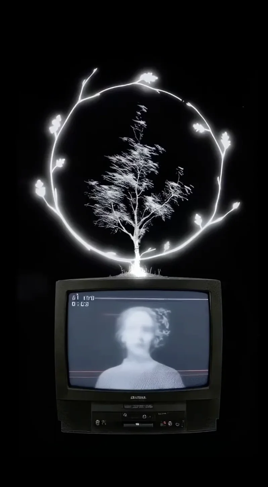

Where Is “New” Art Heading? · «Куда идёт «новое» искусство?»
Moscow · VnutriGallery, Khlebozavod No. 9 · 2025
Awareness and a work for the projection hall, prepared for the opening. Participation with the Berezovy Prompt art group.
A group exhibition by Berezovy Prompt at the Vnutri digital art centre, curated by Marianna Malyarova. The title refers to an essay by Wassily Kandinsky about the search for new forms of artistic expression.
I presented Awareness and also prepared a work for the projection hall for the opening.
Photos and Images

